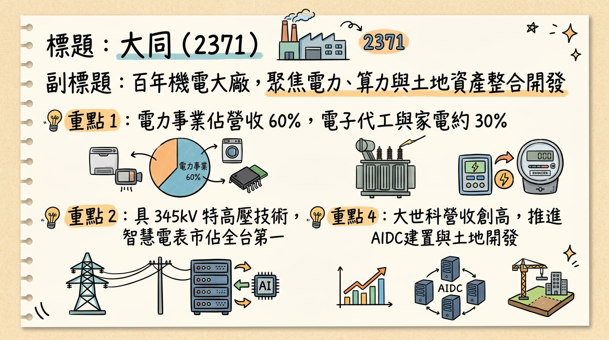
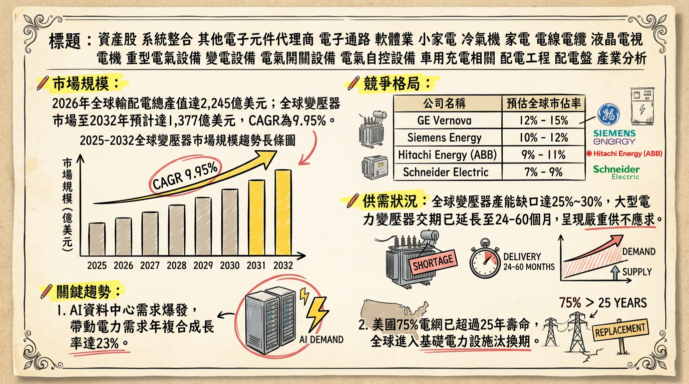
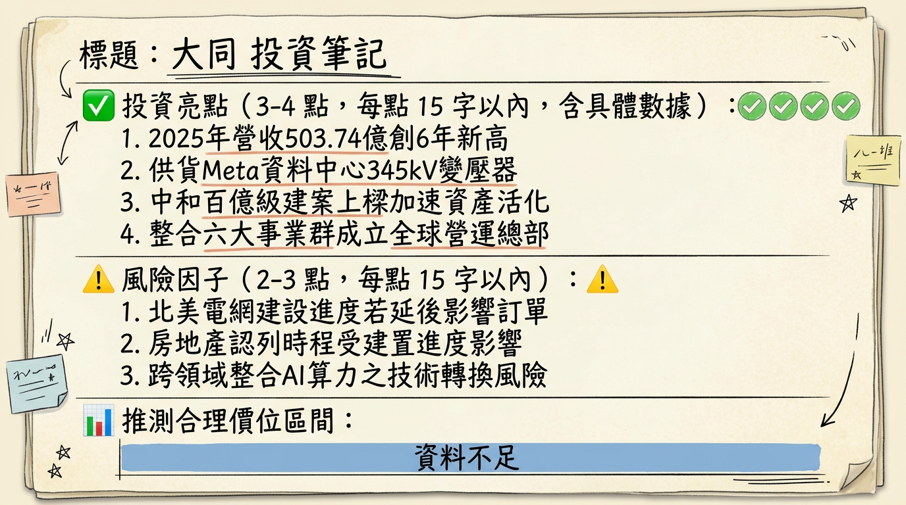

2371 大同 深度研究報告：百年大廠轉型「重電、算力、土地」三位一體，迎來營收獲利收割期
一句話摘要
大同（2371）成功從傳統家電廠轉型為電力與 AI 能源系統商，憑藉 345kV 特高壓變壓器技術打入北美與日本市場，2025 年營收重回 500 億大關，2026 年進入本業獲利爆發期。
公司概覽
大同為台灣百年綜合機電大廠，近年營運重心轉向高值化。目前業務聚焦於「電力、算力、土地資產」三大核心：
- 電力事業：含特高壓/配電變壓器、電線電纜、智慧電表。
- 電子/系統整合：含 AI 算力中心（AIDC）建置與家電代工。
- 資產開發：土地活化與工業園區開發。
營收結構預估 (2025-2026)
| 業務群 | 營收占比 | 核心產品 / 服務 | 毛利貢獻度 |
|---|
| 電力事業群 | 60% | 345kV 變壓器、161kV 線纜、智慧電表 | 高 (為核心毛利來源) |
| 電子代工/消費 | 25-30% | 迷你電腦、大同電鍋、空調冰箱 | 中 |
| 系統整合 (SI) | 10% | AI 算力中心 EPC 工程 (子公司大世科) | 中 |
| 不動產/其他 | 3-5% | 大同莊園、資產重估 (受認列時程影響) | 極高 (單次性收益) |
核心競爭優勢
345kV 特高壓技術與 UL 認證：大同為台灣極少數能穩定產製 345kV 特高壓變壓器並取得美國認證的廠商，具備與全球巨頭（如 Hitachi Energy）競爭的技術能力。
「電力 + 算力」一條龍服務：透過大世科提供算力建置，大同提供電力配套與能源轉換系統（PCS），是國內唯一能統包 AI 資料中心基礎設施的廠商。
全球產能佈局：在台灣三峽、觀音、大園均有擴產，且在阿曼與越南設有生產基地，有效規避關稅與成本波動。
財務分析
月營收趨勢表格 (2025-2026)
| 月份 | 營收金額 (億元) | 月增率 (MoM) | 年增率 (YoY) | 備註 |
|---|
| 2026/01 | 42.44 | -11.64% | +19.26% | 創近 8 年同期新高 |
| 2025/12 | 48.03 | -0.78% | +12.14% | 電力事業大幅成長 |
| 2025/11 | 48.41 | -0.10% | -15.23% | 高基期影響 |
| 2025/10 | 36.90 | N/A | N/A | Q4 推算數據 |
年度與季度獲利概況
- 2025 全年營收：503.74 億元（年增 6.1%），創 6 年新高。
- 2024 全年 EPS：6.46 元（含處分芙蓉大樓收益）。
- 2025 前四季累計 EPS：25.44 元（受大量業外處分收益挹注）。
- 2026 營收目標：管理層設定成長目標 不低於 15%。
法說會重點（2025/10 - 2025/12）
在手訂單：電力事業群在手訂單約 215 億元，訂單能見度直達 2027 年。
北美市場：已接獲 800MW 太陽能與 500MW 儲能案場電力變壓器訂單，詢價件數較預期高出 60%。
產能提升：電力變壓器產能目標提升 25%，觀音新廠於 2025 下半年投產。
股利政策：管理層承諾 2025 年配發率不低於 60%，並規劃改為每半年配發。
券商觀點
| 券商名 | 目標價 | 評等 | 日期 | 核心觀點 |
|---|
| J.P. Morgan | 45.00 | 正向 | 2026/01 | 海外市場進入收成期，北美訂單量增 |
| 群益證券 | 47.00 | 看多 | 2025/03 (⚠️過時) | 重電事業毛利提升，長期看好 |
| 本土大型券商 | 38.00 | 中立 | 2025/08 (⚠️過時) | 關注資產活化進度與本業成長速度 |
| Investing.com 綜合 | 40.00 | 平均目標價 | 2026/03 | 12 個月平均目標預期 |
財報深度分析
利潤率趨勢表格 (2024Q4 - 2025Q3)
| 季度 | 毛利率 (%) | 營業利益率 (%) | 稅後淨利率 (%) | 關鍵因素 |
|---|
| 2025 Q3 | 16.10% | 4.12% | 5.73% | 產品組合優化 |
| 2025 Q2 | 15.80% | 3.95% | 4.20% | 電力事業比重增加 |
| 2025 Q1 | 18.00% | 4.00% | 2.90% | 配電產品出貨旺 |
| 2024 Q4 | 15.20% | 3.50% | 25.40% | 一次性業外收益高 |
- 存貨分析：2025 Q3 存貨週轉天數由 222 天降至 178.2 天，顯示變壓器交貨速度加快。
- 資本支出：2025 年前三季累計支出約 16.8 億元，用於觀音與大園廠擴建。
股權異動
- 庫藏股：2025 年 1 月買回並註銷 75,500 張，平均價格 44.53 元，用以瘦身股本。
- 現金減資：2025 年 6 月減資 5%，每股退還 0.5 元。
- 股利配發：2025 年 7 月配發約 3.105 元 現金（含減資退還）。
產業分析（重電與能源）
台灣重電同業競爭對比 (2025-2026 預計)
| 公司名稱 | 2025 營收 (億) | 重電毛利率 | 核心競爭力 |
|---|
| 大同 (2371) | 503.7 | ~25% | 345kV 技術、AI 算力一條龍、土地活化 |
| 華城 (1519) | ~250 | 40% 以上 | 北美外銷佔比高、高端變壓器龍頭 |
| 中興電 (1513) | ~280 | 30-35% | 台電 GIS 高壓開關獨佔 (90%) |
| 士電 (1503) | ~380 | 25-30% | 三菱電機合作、日系市場穩定 |
近期催化劑
利多事件
- [2026/01] 傳出間接供貨 Meta 北美資料中心電力設備。
- [2026/02] 中和百億建案上樑，未來兩年進入獲利認列期。
- [2026/02] 成立全球總部，整合六大事業群強攻 AI 園區。
利空/風險
- [2027 風險] 公共工程標案停權處分之長期潛在影響。
- [財務風險] 131 億元法律訴訟賠償金之提列壓力。
- [籌碼風險] 外資於 2026 年初有調節跡象，持股比率降至 9.82%。
⭐ 成長動能時間軸
- 2025 Q4：啟動越南變壓器廠併購（預計取得 60-70% 股權）。
- 2026 Q1：觀音新廠配電變壓器進入放量期，應對北美訂單。
- 2026 Q2：大同智能 (子公司) 預計執行 IPO，強化綠電與光儲布局。
- 2026 H2：日本熊本 AI 算力中心專案動工，電力設備規模達 200MW-500MW。
- 2027 全年：大同莊園三期 (總銷 160 億) 完工認列。
2026 展望
成長動能：
外銷加速：北美電力變壓器詢價與轉單效應持續，營收成長預期不低於 15%。
AI 基礎建設：受惠 AIDC 模組化供電需求，電力事業毛利將進一步優化。
風險因子：
2024 年高基期業外收益，使 2026 年 EPS 需依賴本業大幅增長才能持平。
原物料（電工鋼、銅材）價格波動對利潤率的挑戰。
投資結論
本業轉型成功：營收已達 500 億量體，重電與電力事業占 6 成，正式脫離家電股轉向重電股。
AI 題材明確：具備 345kV 技術與大世科算力資源，是少數能直接受益於 AI 資料中心電網升級的台廠。
評價區間建議：參考 2026 年法人預估與減資後股本，合理股價區間預估為 38.0 - 45.0 元。若 131 億訴訟有明確利空出盡，或北美大型訂單確切認列，有望挑戰前波高點。
本報告由 AI 自動產生，資料來源為公開網路資訊，僅供參考，不構成投資建議。產生時間：2026-03-04 07:54
📊 資訊卡


